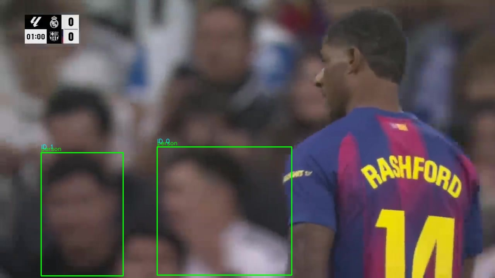
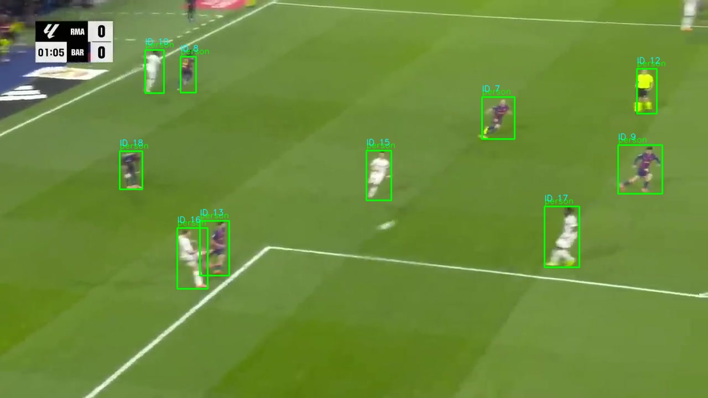
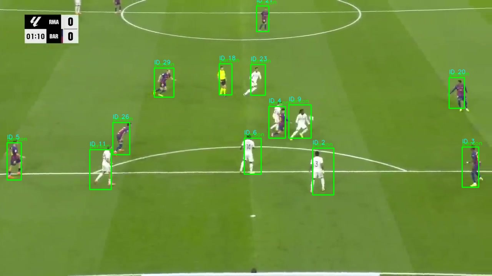

What it does
Ingests video (YouTube URL, local file, or RTSP stream) and runs a four-stage pipeline: YOLOv8 object detection, ByteTrack multi-object tracking with Kalman filtering, spatial-temporal graph construction, and GraphSAGE GNN inference for player role classification. Every stage logs to MLflow and emits structured JSON for downstream analytics.
Pipeline architecture
┌─────────────────┐ ┌──────────────┐ ┌──────────────┐
│ Video Source │ │ Detection │ │ Tracking │
│ YouTube / RTSP │────▶│ YOLOv8n │────▶│ ByteTrack │
│ FIFA Gameplay │ │ (stock COCO)│ │ + Kalman │
└─────────────────┘ └──────────────┘ └──────┬───────┘
│
┌───────────────┐ ┌─────────▼────────┐
│ FastAPI │ │ Graph Builder │
│ REST + Live │◀────│ Spatial-Temporal│
└───────┬───────┘ └─────────┬────────┘
│ │
┌───────▼───────┐ ┌─────────▼────────┐
│ MLflow │ │ GraphSAGE GNN │
│ Tracking │ │ Tactical Analysis│
└───────────────┘ └──────────────────┘Detection & tracking output
Sample frames from a real La Liga match processed end-to-end. Green boxes are tracked detections; labels show persistent track IDs and COCO class names. Team classification clusters jersey colors automatically.




Run stats (real La Liga footage, 20 frames)
Key features
Detection & tracking
Stock YOLOv8n (COCO) with soccer-tuned tracking params. ByteTrack + Kalman filtering handles occlusions up to ~20 frames. Per-class NMS + area-ratio filtering suppresses spurious bboxes.
Graph neural networks
Spatial-temporal graphs from tracked positions; GraphSAGE architecture for player role embeddings. Inference path wired via --gnn-weights; trained checkpoint pending.
Tactical analytics
Jersey-color team classification (K-means on bbox crops), home/away control percentage per frame, pitch-control grid (12×16). Homography calibration optional.
Live streaming
RTSP camera ingestion with frame-by-frame inference. Low-latency overlay rendering; WebRTC/HLS re-streaming via FastAPI.
MLOps
MLflow experiment tracking, DVC dataset versioning, FastAPI REST endpoints, Prometheus metrics, structured JSON logs. Automated weekly retraining scaffold.
Dual video source
Automated YouTube highlight download (yt-dlp + Whisper metadata) and FIFA gameplay footage analysis. Adaptive preprocessing per source.
Quickstart
# 1. Setup environment (Python 3.12)
uv venv --python 3.12 .venv
source .venv/bin/activate
uv pip install -r requirements.txt
# 2. Fetch sample data
dvc repro fetch_sample preprocess
# 3. Run the full pipeline
python -m src.pipeline_full \
--frames-dir data/processed/sample \
--output-dir outputs/pipeline_run \
--confidence 0.4 \
--min-confidence 0.4 \
--distance-threshold 120.0 \
--max-age 20
# 4. Live streaming (requires RTSP source)
make run-live URL=rtsp://example/streamTech stack
Pipeline output
A full run produces:
pipeline_summary.json— totals, unique tracks, graph stats, per-team control %detections/— per-frame YOLO detection JSONtracks/— track history with confidence scoresoverlays/— visualized frames (bbox + track ID + class)graphs/— PyG graph data + optionalpredictions.json(if--gnn-weightsprovided)tactical/— pitch-control grids + team assignments